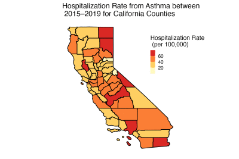
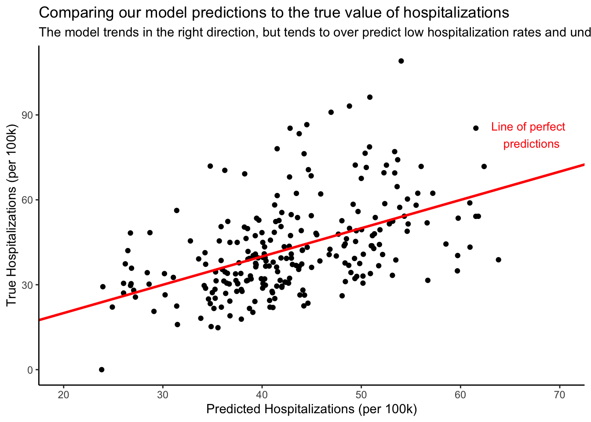
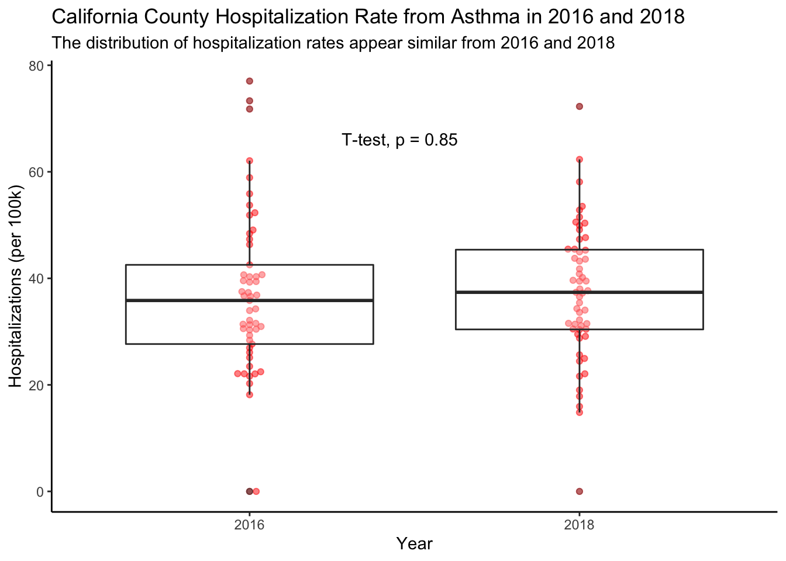

Master of Environmental Data Science @ The Bren School of Environmental Science at UCSB
Published
December 3, 2022
Introduction
Asthma is a chronic disease that affects the respiratory system. During an asthma attack, an individual’s airways constrict and swell, causing a combination of coughing, wheezing, shortness of breath, and chest tightness [1]. For some individuals, symptoms can be quite mild and handled easily with preventative medication. For others, asthma can be a life threatening disease that severely reduces their quality of life.
Globally, asthma affected roughly 262 million people and caused over 450,000 deaths in 2019 [2]. While not quite as severe in the United States, it’s estimated that 25 million Americans have asthma and over 4,000 die from asthma each year. It is important to note that asthma does not affect all groups equally: statistics provided by the CDC demonstrate that asthma is more common among women, individuals living in poverty, and Black and indigenous people [3].
As someone with asthma, I’m generally pretty cognizant of things that trigger my asthma flare ups. For example, I’ve noticed that I am particularly sensitive to poor air quality. In 2020, I was living in Minnesota during a particularly severe period of Canadian wildfires—the smoke from these fires affected both the air quality and my severity of asthma. During this time, I frequently looked at a variety of weather apps to check the air quality before doing any activity that required me to be outside for an extended period of time.
It’s fairly intuitive that air quality would have an impact on asthma, an upper respiratory disease, and this idea is supported by research [4]. However, it is not as clear just how strong this impact is, as well as what other factors are at play in determining asthma attack prevalence. In this study, I will explore how a variety of factors affect the rate of hospitalizations caused by asthma for each county in California. I will also test a hypothesis that there are more asthma related hospitalizations in years when more acres of land burned due to wildfire. As drought continues in California and wildfires seem likely to worsen, it’s prudent that we examine how air quality and wildfire smoke impact asthma.
Data
In order to answer the above questions, I obtained data from a variety of sources.
County level Air Quality Index (AQI) data was retrieved from the EPA [5].
Bi-yearly asthma prevalence [6] and yearly hospitalization counts [7] were obtained from the California Health and Human Services (CHHS) Open Data Portal .
A shapefile containing county level geographic information was obtained from the California Open Data Portal [8].
Smoke data, measured in daily PM 2.5 estimates, was retrieved from the Environmental Change and Human Outcomes (ECHO) lab at Stanford [9].
County level demographic information was collected by the United States Census Bureau [10].
Methods
Once I read in each of the datasets, I cleaned them to follow the ‘Tidy Data’ format, selected desired columns and rows, and joined the datasets [11]. New columns, such as the mean smoke (measured in PM 2.5) per year for each county were created. High levels of PM 2.5, fine particles typically smaller than 2.5 µm in diameter, are a great concern to public health because PM 2.5 can travel deeper into the lungs than larger particulate matter. I also adjusted the maximum AQI values to not exceed 500—the EPA’s highest level of healthy concern, “Hazardous,” ranges from index values of 301–500 so any value above that is functionally equivalent.
All analyses, specifically an Ordinary Linear Regression (OLS) model and a Welch t-test (α < 0.05) were conducted in Rstudio.
For the outcome variable in the regression, I wanted to focus on hospitalizations due to asthma. Hospitalizations, used as a proxy for measuring the severity of asthma attacks, seem particularly sensitive to climate related triggers that could vary over the years for which my data was collected. Since hospitalizations per county vary significantly with the population of the county, I normalized the variable by calculating the hospitalization rate per 100,000 people.
Before jumping into modeling, each variable of interest was examined to ensure that it adhered to the assumptions required for OLS. The max AQI and population density explanatory variables were log transformed to normalize outliers and linearize the distribution, and I took the square root of the mean smoke variable for a similar effect. For each of these variables, there was still some minor heteroskedasticity shown in residual plots. There were also more extreme positive residuals than negative residuals; however, the relationships all appeared mostly linear and histograms of the residuals were fairly normal, so I concluded that proceeding with caution would be acceptable.
For the Welch t-test, I wanted to examine whether there is a difference in the hospitalization rate during more severe wildfire years. To do this, I compared the mean hospitalization rate in 2016 (669,534 acres burnt due to wildfire) and 2018 (1,975,086 acres burnt due to wildfire).
Results + Discussion
To determine the magnitude and significance at which various explanatory variables relate to hospitalizations, I conducted an OLS multiple regression.
For model selection, I utilized two different approaches. First, I completed the model selection manually by choosing variables/interactions that I thought could be meaningful and then eventually removing ones that were insignificant and didn’t have as strong of a theoretical rationale for why they should be included in the model. Then, I included a backward stepwise model selection process by using the `stepAIC()` function in the MASS package—this allowed me to automate the process of selecting which variables should be included to optimize the model. With backwards steps, we start the stepwise process with all predictors and remove the least statistically significant one until we find the model with the lowest AIC (a measure of goodness of fit) value [12]. Both approaches led me to the same predictor variables of interest: log(max AQI), sqrt(mean PM from smoke), log(population density), and median income.
Code
#CREATING A MAP OF THE HOSPITALIZATION RATEhosp_ggplot <-ggplot() +geom_sf(data = hosp_year_summaries, aes(fill = mean_hosp), col ='black', size =0.5) +#fill color is the mean hospitalization rate from asthma, borders are blacklabs(title ="Hospitalization Rate from Asthma between \n 2015–2019 for California Counties") +theme_bw() +theme(axis.title.x =element_blank(), #creating a blank backgroundaxis.title.y =element_blank(),axis.ticks.x =element_blank(),axis.ticks.y =element_blank(),panel.grid =element_blank(),panel.border =element_blank(),axis.text =element_blank(),legend.direction ="vertical", #specifying legend characteristicslegend.position =c(1, 0.75),legend.key.height =unit(0.3, "cm"),legend.key.width =unit(0.3, "cm")) +scale_fill_stepsn(colors =c("#fff0d6", #specifying the color scheme "#ffffb2", "#fecc5c", "#fd8d3c", "#f03b20", "#bd0026"),na.value ="grey50",guide =guide_colorbar(title ="Hospitalization Rate \n (per 100,000)")) #specifying the legend title #I then create 4 more plots for each of my explanatory variables. To see this code, checkout my full repository. #SAVING THE IMAGE AND READING IT BACK INTO Rggsave(filename ="hosp_map.png", plot=hosp_ggplot, width=6, height=4, units ="in") #save the plot as a pnghosp_map_png <-image_read("hosp_map.png") #read the png into R#MAKING THE ANIMATIONgif_images <-c(hosp_map_png, income_map_png, density_map_png, aqi_map_png, smoke_map_png) #Creating a vector of imagesasthma_animation <-image_animate(image_scale(gif_images, "400x400"), fps =0.5, dispose ="previous") #creating the animationimage_write(asthma_animation, "asthma_vars.gif") #if you want to save your gif to your computer, image_write() allows you to do so!asthma_animation

Through spatial visualization of the data, we can get an initial sense of how a couple of the model’s explanatory variables correlate with the county level hospitalization rate. Southern California and the Central Valley appear to have higher mean AQI values and a higher hospitalization rate. Fine particulate matter from wildfires, meanwhile, appears to have an opposite effect with higher values in Northern California as well as the northern section of the Central Valley. Looking at the population density and median income maps, it is harder to see how they correlate with the hospitalization rate. Below, we examine how each predictor relates to the hospitalization rate in more detail.
Code
asthma_mod <-lm(hosp_per_100k ~log(max_aqi) +sqrt(mean_smokePM) +log(pop_density_sq_m) + median_income_in_thousands, data = hosp_full)asthma_hosp_table <-tab_model(asthma_mod,pred.labels =c("Intercept", "Log Max AQI", "SQRT Mean Smoke", "Log Pop Density", "Median Income (in $1000s)"),dv.labels =c("Hospitalization Rate (per 100k)"),string.ci ="Conf. Int (95%)",string.p ="P-value",title ="Table 1. Linear Model Results",digits =3)asthma_hosp_table
Table 1. Linear Model Results
Hospitalization Rate (per 100k)
Predictors
Estimates
Conf. Int (95%)
P-value
Intercept
0.362
-23.806 – 24.530
0.976
Log Max AQI
11.037
6.467 – 15.608
<0.001
SQRT Mean Smoke
-3.422
-5.544 – -1.300
0.002
Log Pop Density
4.293
2.839 – 5.747
<0.001
Median Income (in $1000s)
-0.408
-0.535 – -0.281
<0.001
Observations
249
R2 / R2 adjusted
0.250 / 0.238
Results from the model indicate that air quality (measured through AQI and particulate matter from smoke), population density, and median income are all statistically significant predictors of the hospitalization rate.
Before diving into each predictor variable, it’s important to emphasize the difference between AQI measurements and PM 2.5. The AQI is typically calculated using hourly measurements of 5 pollutants: fine particles (PM 2.5 and PM 10), ground-level ozone, sulfur dioxide, nitrogen dioxide, and carbon monoxide. This means that smoke from wildfires, measured in PM 2.5, is one of the factors that impacts the AQI. By including smoke from wildfires as a separate variable, I am able to examine that separately.
Starting with the air quality index, there is a positive trend between the log of the maximum AQI and the hospitalization rate (\(p < 0.001\), \(\beta = 11.037\)) . Intuitively, this makes sense, as it seems more likely that severe asthma flare-ups could result from dangerous air quality values.
Previous studies have indicated that particular matter from wildfires can actually be more harmful for individuals with asthma than from other sources, so it was surprising that the square root of the PM 2.5 caused by wildfire smoke was negatively associated with the hospitalizations (\(p = 0.002\), \(\beta = -3.422\)) [13]. One possible explanation for this result is that individuals with asthma were much less likely to go outside during times when wildfire smoke was particularly severe. Compared to the other measures of air quality, wildfire smoke is much more noticeable, so individuals with asthma who have the ability to avoid interacting with the smoke would likely choose to do so.
There was a positive trend between the log of the population density per square mile and the county level hospitalization rate (\(p < 0.001\), \(\beta = 4.293\)). It makes sense that asthma may be worse in urban areas due to increased pollution, but this \(\beta\) value is the slope for the population density while holding the other variables constant. It’s possible that there are other factors, such as different forms of pollution, increased proximity to hospitals, or other demographic information that could be influencing the effect of population density. Median income, unsurprisingly, had a negative relationship with the hospitalization rate (\(p < 0.001\), \(\beta = -0.408\)). Higher income individuals are more likely to be able to afford asthma prevention and likely have access to cleaner indoor air.
Overall, the model’s predictive power is not too strong. With an \(R^2\) of 0.250, just 25% of variability in the per county hospitalization rate can be explained using the explanatory variables. To further test the model’s predictive power, I used it to predict hospitalization rates for my existing data and then compared the predictions to the true observed hospitalization rates in the graph below. The graph demonstrates that the predictions trend in the right direction but vary a fair amount in their accuracy, especially for observations when the true hospitalization rate was above 60 people per 100,000.
Code
asthma_mod <-lm(hosp_per_100k ~log(max_aqi) +sqrt(mean_smokePM) +log(pop_density_sq_m) + median_income_in_thousands, data = hosp_full) #the final modelpredictions <-augment(asthma_mod) #create predictions #plot the hospitalization rate predictions compared to the true observed valueprediction_plot <-ggplot(data = predictions, mapping =aes(x = .fitted, y = hosp_per_100k)) +geom_point() +geom_abline(slope =1, color ="red", lwd =1) +#adds red line that follows what the graph would look like if my predictions perfectly matched the observed values.xlim(20, 70) +annotate("text",x =67, y =83, label ="Line of perfect \n predictions",color ="red",size =3.5) +labs(x ="Predicted Hospitalizations (per 100k)",y ="True Hospitalizations (per 100k)",title ="Comparing our model predictions to the true value of hospitalizations",subtitle ="The model trends in the right direction, but tends to over predict low hospitalization rates and underpredict low hospitalization rates. A perfect model would follow the line in red.") +theme_classic()prediction_plot

In order to further test the effect of wildfires on asthma, I performed a t-test (alpha < 0.05) to compare the mean hospitalization rate caused by asthma in 2016 and 2018. For context, 2016 was a relatively light year for wildfires, with 669,534 acres burnt; in comparison, almost three times as many acres (1,975,086) burned in 2018 [14]. Seeing if there is a difference in the hospitalization rate between these two years could demonstrate the effect of wildfires on asthma hospitalizations.
The null hypothesis: There is no difference in the mean hospitalization rate between 2016 and 2018.
\(H_0:\mu_{hosp2016} - \mu_{hosp2018} = 0\)
The alternative hypothesis: This is a difference in the mean hospitalization rate between 2016 and 2018.
\(H_A:\mu_{hosp2016} - \mu_{hosp2018} \neq 0\)
My t-test concluded that there is not enough evidence to reject the null hypothesis (t = -0.18629, p = 0.8526). This indicates that, if there was a true difference in the mean hospitalization rate, we’d expect to find a difference in means as extreme as ours 85% of the time. This aligns with the regression model conducted above, but does not align with previous research that smoke from wildfires increases cases of severe asthma [13].
However, it is important to note that this result does not mean that the total acreage of wildfires burnt has no effect on asthma hospitalizations. It’s possible that the location of the fire and other factors, such as wind patterns and population density near the fire, are affecting the result. Further research could look into the spatial relationship between fires and where asthma related hospitalizations occur.
Code
## Hypothesis test that hospitalizations would be different (likely higher) in 2018 than in 2016 due to increased fire acreage burnt. #2016: 669,534 burnt#2018: 1,975,086 burnthosp_2016_2018 <- hosp_full %>%filter(year ==2016| year ==2018) %>%mutate(year =as.factor(year))fire_test <-t.test(hosp_per_100k ~ year, data = hosp_2016_2018)fire_test_table <-tab_model(fire_test,string.ci =c("Conf. Int (95%)"),string.p ="P-value",dv.labels =c("Hospitalization Rate"),pred.labels ="2016 – 2018",title ="Table 2: Hospitalization Rate and Wildfires: Welch Two Sample t-test")fire_test_table
Table 2: Hospitalization Rate and Wildfires: Welch Two Sample t-test
Hospitalization Rate
Predictors
Estimates
Conf. Int (95%)
P-value
2016 – 2018
-0.51
-5.94 – 4.92
0.853
Code
#Creating a beeswarm plot with boxplot overlay to show distribution of county level mean hospitalization rates for 2016 and 2018. beeswarm_boxplot <-ggplot(data = hosp_2016_2018, mapping =aes(x = year, y = hosp_per_100k)) +geom_beeswarm(color ="red", alpha = .5) +geom_boxplot(alpha =0.3) +theme_classic() +labs(x ="Year",y ="Hospitalizations (per 100k)",title ="California County Hospitalization Rate from Asthma in 2016 and 2018",subtitle ="The distribution of hospitalization rates appear similar from 2016 and 2018")#add in t-test and p value to the plotbeeswarm_boxplot_t_test <- beeswarm_boxplot +stat_compare_means(method ="t.test", label.x =1.35, label.y =65)beeswarm_boxplot_t_test

Conclusions
While this research is an important step in exploring the effect of air quality on hospitalizations from asthma in California counties, there are a number of limitations of this analysis that could be addressed in future research.
If possible, further analysis should explore the temporal relation between air quality and hospitalizations from asthma on a more granular scale. I was only able to obtain hospitalization data at an annual scale, which made it harder to see how shorter spikes in poor air quality affected asthma related hospitalizations, if at all.
It would also be worth exploring a similar analysis but at the census tract, rather than county level. Counties are sufficiently large that the air quality is likely not uniformly distributed throughout. Furthermore, focusing on census tracts could open up the possibility of exploring income in more detail. Our results indicated that higher income averages were associated with lower hospitalization rates from asthma. It’s possible that this finding would be even more pronounced at the census tract, rather than county level.
This analysis also has important implications for environmental justice. As mentioned in the introduction, asthma is a disease that affects humans across the globe but more acutely in developing countries. Looking at the World Health Organization’s data for the death rate per 100,000 due to asthma, Kiribati, New Guinea, and Lesotho have rates of 75.4, 47.6, and 45.3, respectively (compared to the US rate of 0.84) [15]. While much of this inequality can likely be attributed to a difference in access to medicine, it is worth exploring what other factors, including air pollution, could be causing such high rates of severe asthma in certain countries. Partnering with researchers in nations where asthma is particularly severe could help address the disparity in prevalence, hospitalization, and death rates across the globe.
To summarize, this research examines a number of factors that relate to hospitalizations from severe asthma. From this analysis, it’s clear that clean air is pertinent to preventing severe asthma flare-ups. Given the potential severity of asthma and its prevalence in the US and across the globe, further research should examine this topic to better understand the primary factors that lead to the most severe cases of asthma.
References
[1] “Asthma - Symptoms and causes,” Mayo Clinic. https://www.mayoclinic.org/diseases-conditions/asthma/symptoms-causes/syc-20369653 (accessed Dec. 03, 2022).
[3] “Most Recent National Asthma Data | CDC,” May 26, 2022. https://www.cdc.gov/asthma/most_recent_national_asthma_data.htm (accessed Dec. 02, 2022).
[4] O. US EPA, “The Links Between Air Pollution and Childhood Asthma,” Oct. 22, 2018. https://www.epa.gov/sciencematters/links-between-air-pollution-and-childhood-asthma (accessed Dec. 04, 2022).
[5] “AirData website File Download page,” United States Environmental Protection Agency. https://aqs.epa.gov/aqsweb/airdata/download_files.html (accessed Dec. 02, 2022).
[6] “Asthma Prevalence - California Health and Human Services Open Data Portal,” CHHS Open Data. https://data.chhs.ca.gov/dataset/asthma-prevalence (accessed Dec. 02, 2022).
[7] “Asthma Hospitalization Rates by County - California Health and Human Services Open Data Portal,” CHHS Open Data. https://data.chhs.ca.gov/dataset/asthma-hospitalization-rates-by-county (accessed Dec. 02, 2022).
[8] “CA Geographic Boundaries - California Open Data,” California Open Data Portal. https://data.ca.gov/dataset/ca-geographic-boundaries (accessed Dec. 02, 2022).
[9] “wildfire_smoke — ECHO: Environmental Change and Human Outcomes Lab | Stanford University,” ECHO: Environmental Change and Human Outcomes Lab | Stanford University. https://www.stanfordecholab.com/wildfire_smoke (accessed Dec. 02, 2022).
[10] R. Whitcomb, J. M. Choi, and B. Guan, “CORGIS Datasets Project,” County Demographics CSV File. https://corgis-edu.github.io/corgis/csv/county_demographics/ (accessed Dec. 02, 2022).
[12] R. statistics for P. Science, “Choose model variables by AIC in a stepwise algorithm with the MASS package in R,” R Functions and Packages for Political Science Analysis, Oct. 22, 2020. https://rforpoliticalscience.com/2020/10/23/choose-model-variables-by-aic-in-a-stepwise-algorithm-with-the-mass-package-in-r/ (accessed Dec. 04, 2022).
[13] D. Kiser et al., “Particulate matter and emergency visits for asthma: a time-series study of their association in the presence and absence of wildfire smoke in Reno, Nevada, 2013–2018,” Environ. Health, vol. 19, no. 1, p. 92, Aug. 2020, doi: 10.1186/s12940-020-00646-2.
[15] “ASTHMA DEATH RATE BY COUNTRY,” World Life Expectancy. https://www.worldlifeexpectancy.com/cause-of-death/asthma/by-country/ (accessed Dec. 05, 2022).
Citation
BibTeX citation:
@online{white2022,
author = {Lewis White},
title = {Modeling {Asthma} {Hospitalizations}},
date = {12/03/2022},
url = {https://lewis-r-white.github.io/posts/2022-12-03-asthma-blog/},
langid = {en}
}